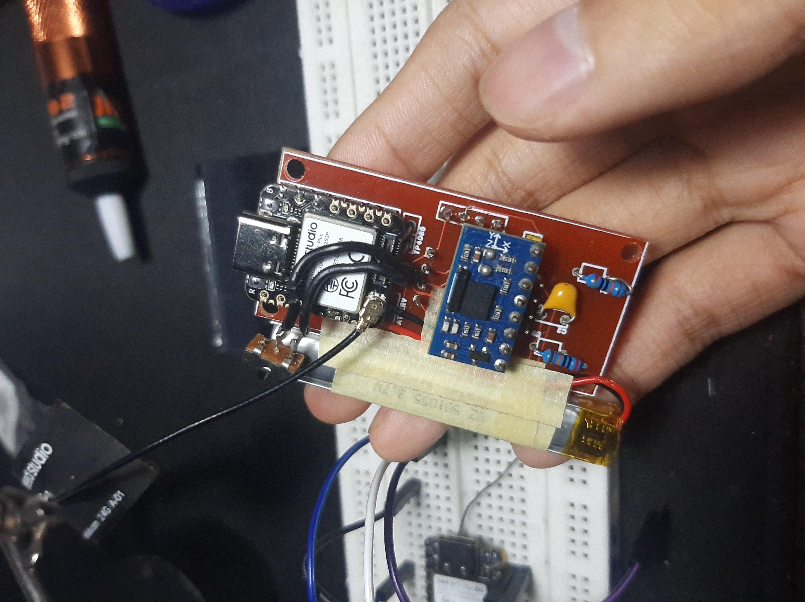
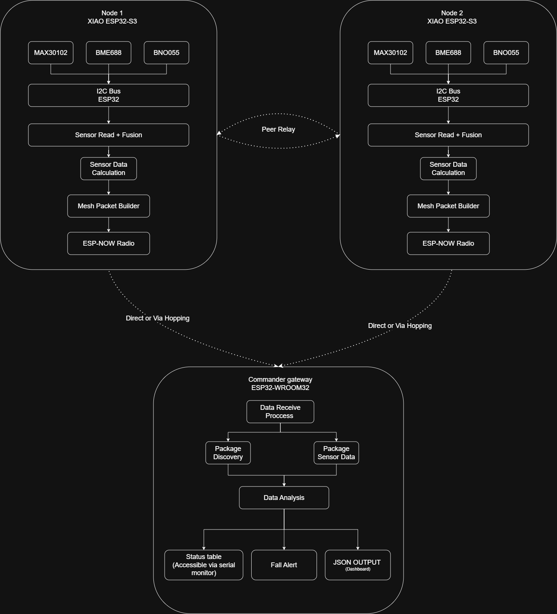
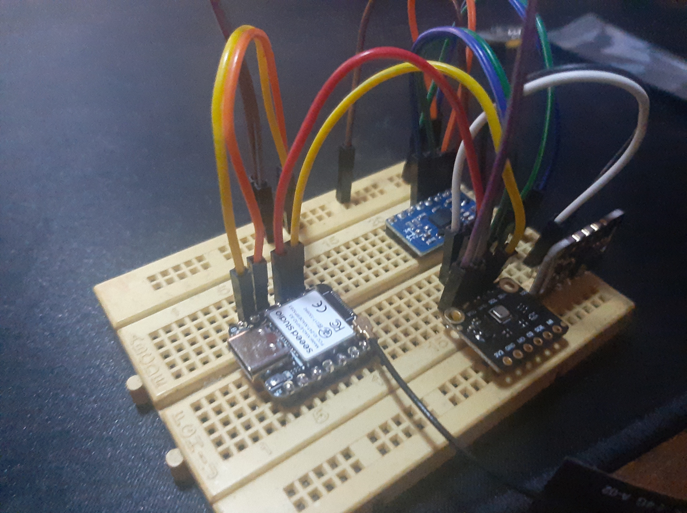
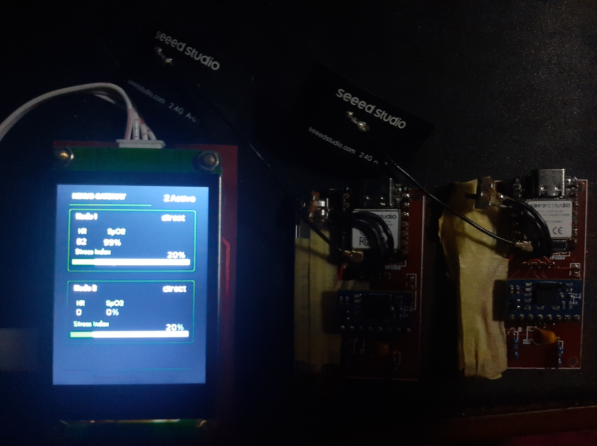
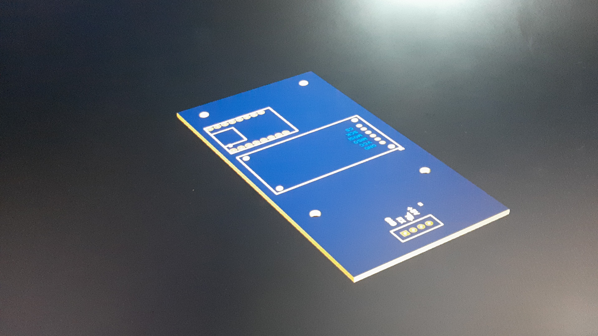

Overview
The system pairs Raspberry Pi and ESP32-based embedded nodes. Each node combines a pulse oximeter with environmental gas, temperature, IMU and GPS sensors, so one unit can report on the person carrying it and on the conditions around them. Several field units send their data in real time to a central monitoring interface.
Network architecture
Field units exchange data over a decentralized wireless network. I combined socket-based networking with ESP-NOW mesh communication, so data reaches the central interface without depending on existing infrastructure.
- A node-to-gateway architecture that scales to many nodes.
- Dynamic peer discovery and multi-node communication in infrastructure-limited environments.

Reliable delivery over a lossy link
Wireless links drop and duplicate packets, so I added custom packet handling on top of the mesh:
- Deduplication so a packet received through more than one path is processed once.
- Acknowledgment handling to confirm that data arrived.
- TTL-based forwarding to limit how far a packet travels while it still reaches the gateway.
Together these improve communication reliability and the network's tolerance to faults.
Firmware
Multi-threaded Python firmware and embedded C/C++ applications handle concurrent sensor acquisition, real-time processing and fault detection. On the resource-constrained hardware I optimized memory usage, communication payload structures and sensor polling workflows.
Debugging and validation
I performed system-level debugging and validation across I2C communication, wireless synchronization, sensor calibration and real-time data consistency.
Hardware design and coordination
I designed the electrical schematics, system block diagrams and the hardware integration architecture. Working with another engineer, I helped define operational procedures, coordinate development activities and set project timelines and implementation milestones.
Gallery



© 2026 Adrian Aryaputra